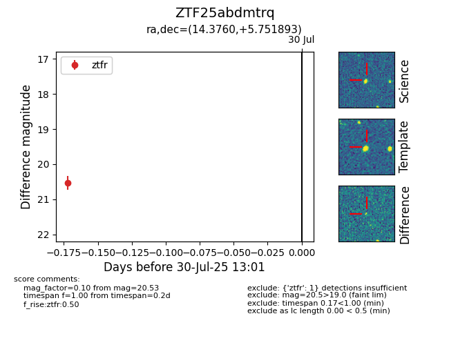

Target ZTF25abdmtrq at 2025-07-30 13:01, see:
FINK: fink-portal.org/ZTF25abdmtrq
Lasair: lasair-ztf.lsst.ac.uk/objects/ZTF25abdmtrq
ALeRCE: alerce.online/object/ZTF25abdmtrq
alt names
ZTF25abdmtrq (ztf,fink)
coordinates:
equatorial (ra, dec) = (14.3760,+5.75189)
galactic (l, b) = (125.7096,-57.08714)
photometry
last ztfr=20.53
1 ztfr detections
